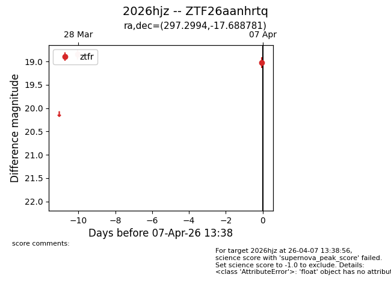
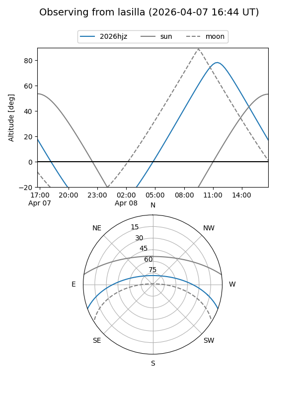
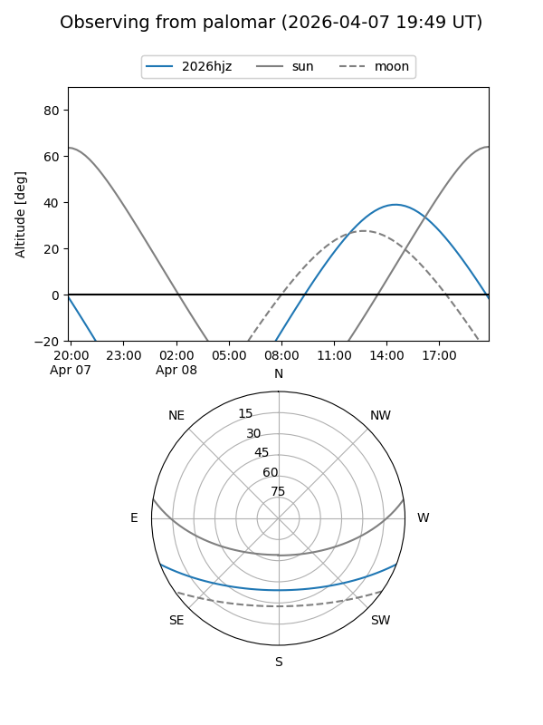
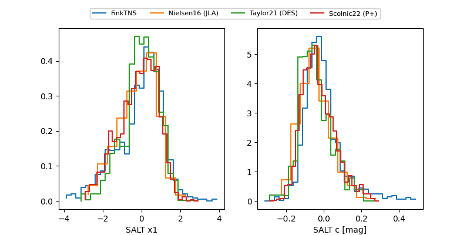

2026hjz
Target 2026hjz at 2026-04-07 13:43
Aliases and brokers:
FINK: link
Lasair: link
ALeRCE: link
TNS: link
YSE: link
alt names
ZTF26aanhrtq (ztf,fink_ztf)
2026hjz (tns,yse)
Coordinates:
equatorial (ra, dec) = 297.2994,-17.68878
equatorial (HMS+DMS) = 19:49:11.85,-17:41:19.61
galactic (l, b) = (22.9677,-20.48657)
Flags:
Photometry:
last ztfr=19.02
2 ztfr detections
Lightcurve

Visibility


Additional plots
